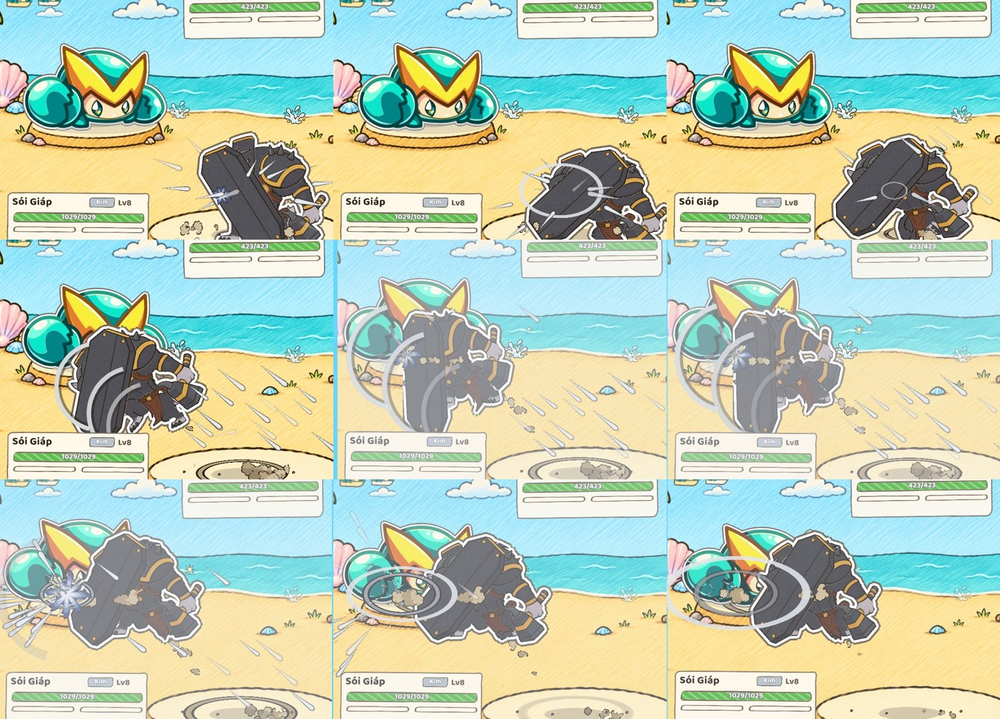
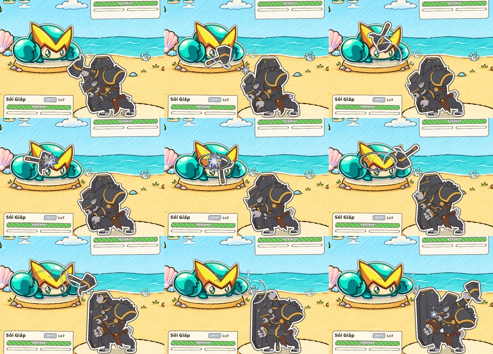
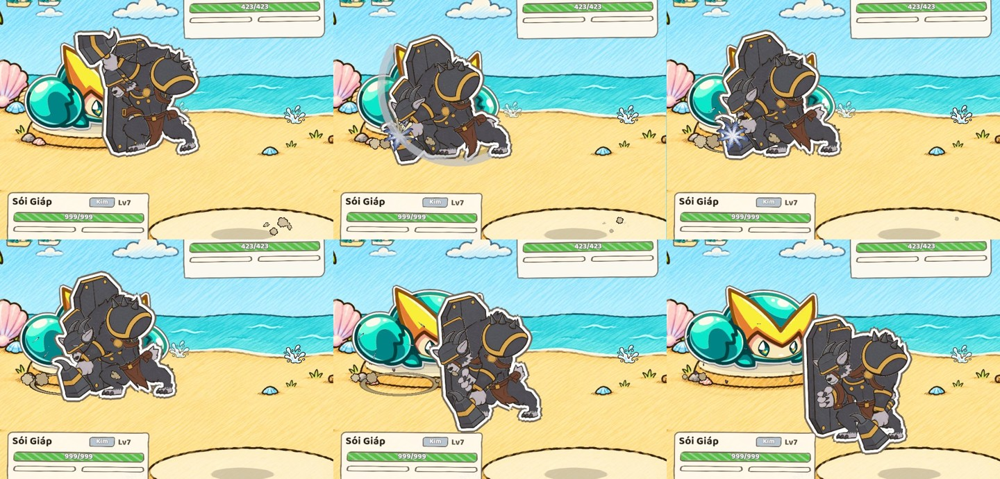
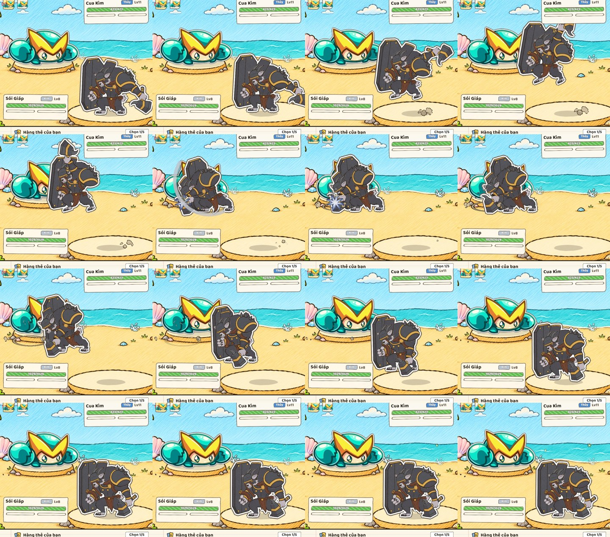
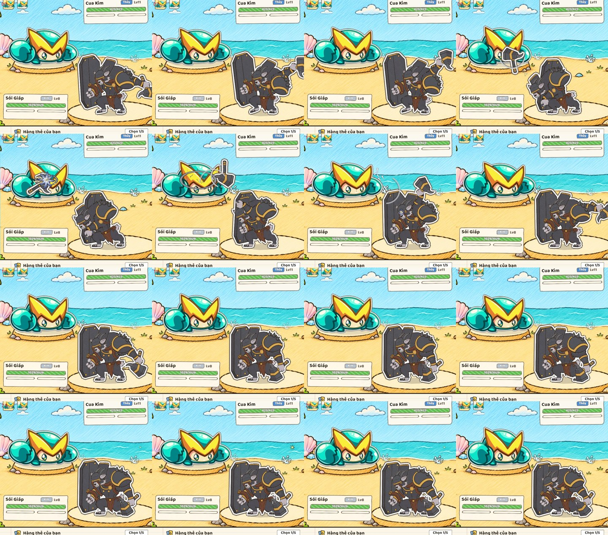
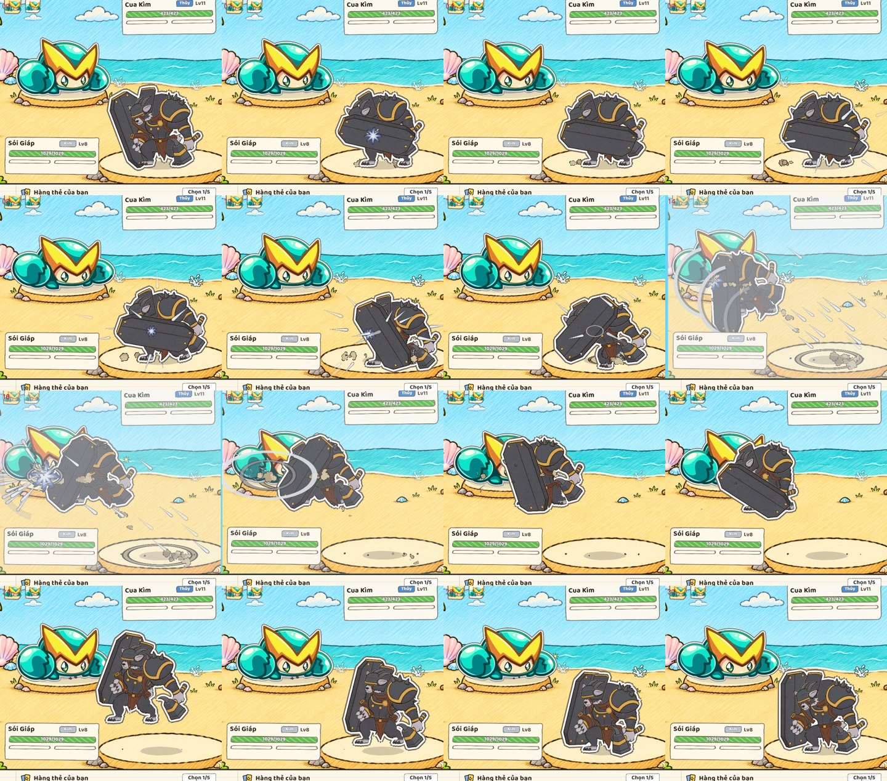
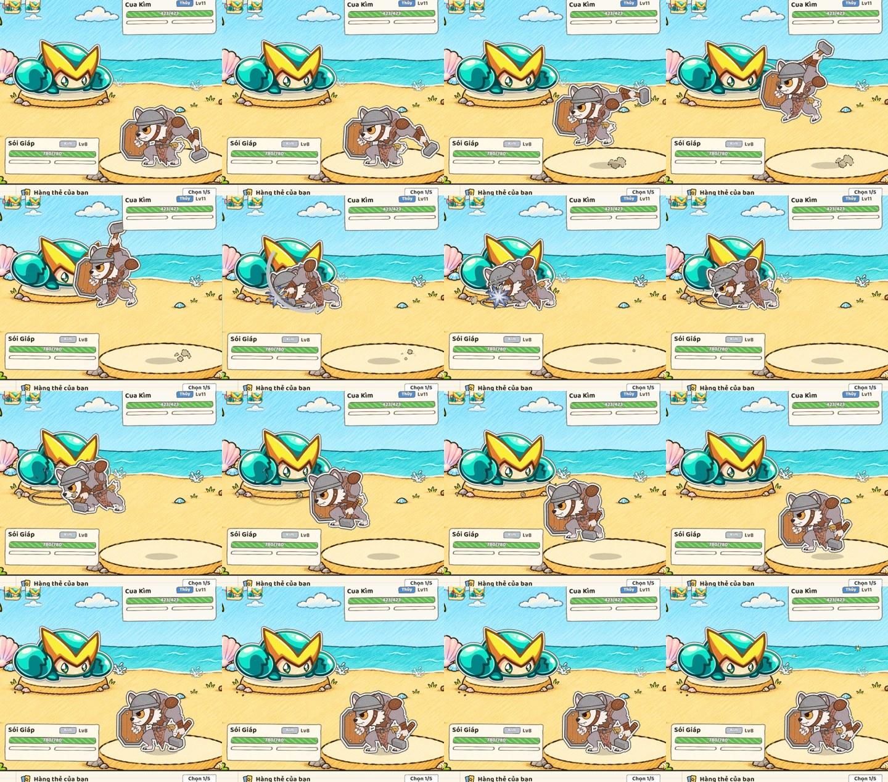
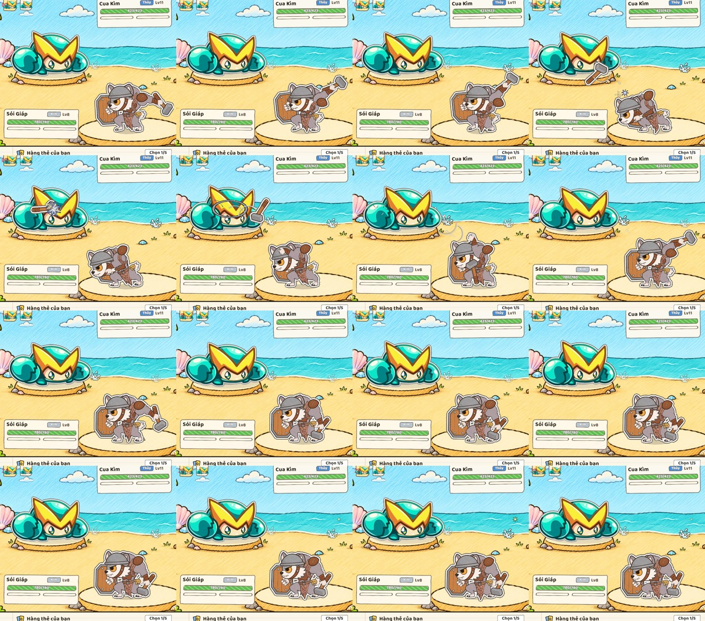
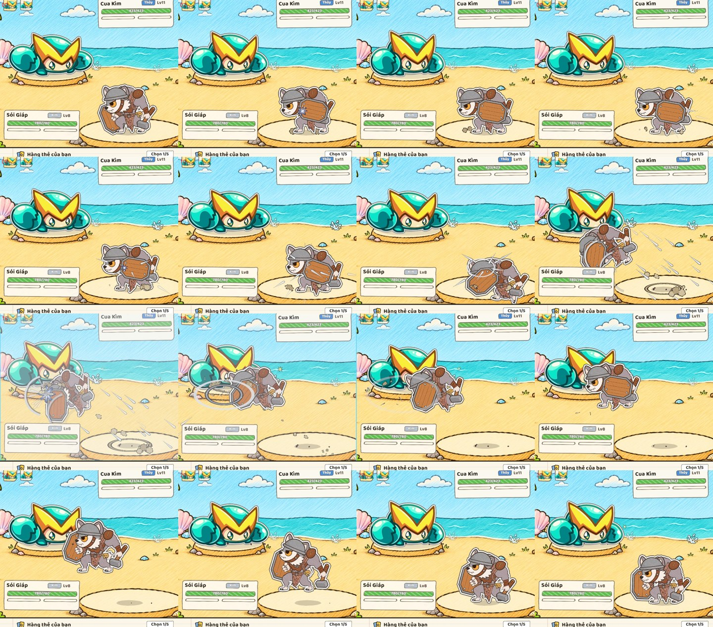

Sói Giáp: chiêu cuối (lao xé gió → húc), khung liền

Sói Giáp: ném búa xoáy, khung liền

Sói Giáp: búa nện, khung liền

Dạng 2: đòn thường

Dạng 2: chiêu mana

Dạng 2: chiêu cuối

Dạng 1: đòn thường

Dạng 1: chiêu mana

Dạng 1: chiêu cuối
